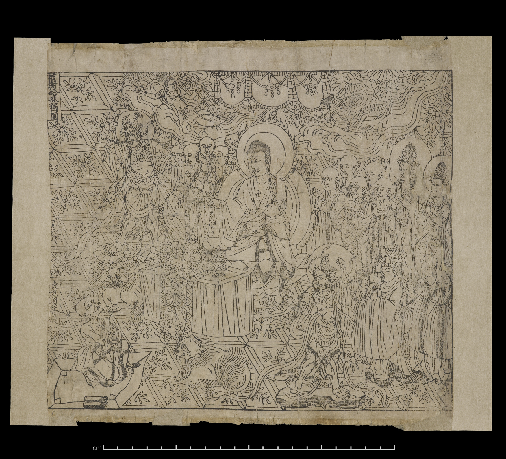
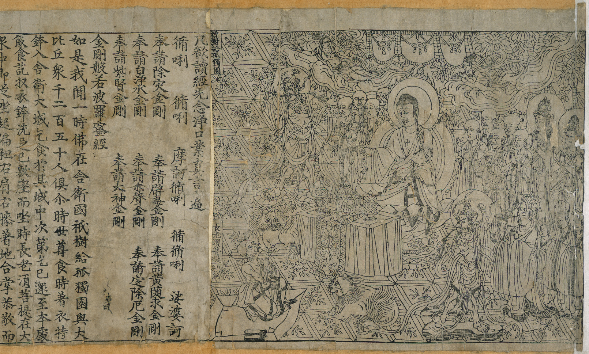

敦煌藏经洞出土《金刚般若波罗蜜经》写卷（图源 Wikimedia Commons，公有领域）
关于这份谱曲（先读）
本谱以姚秦鸠摩罗什译本《金刚般若波罗蜜经》（共三十二分）为蓝本。经文以"应无所住"破相显性，故旋律多用下行回旋，句末稳落于宫音，末后两分转高八度，显空灵透脱。
简谱中无点数字＝中音，数字上方虚点＝高八度。每字一音，句末字拖长。标点不发声，记作休止「0」，其长短即诵念的气口：逗号短顿、句号句读、引号括号几乎不停。注音依通行读音，诵持时请以师承为准。

公元 868 年雕版《金刚经》扉画与经文（图源 Wikimedia Commons，CC0）
简谱图例：
宫 1 · 商 2 · 角 3 · 徵 5 · 羽 6 ＝ C 大调五声音阶；
5 表示高八度（数字上方虚点）。每字一音，句末字拖长。
[就绪] 点「▶ 播放」开始讽诵（进度条可点击跳转）